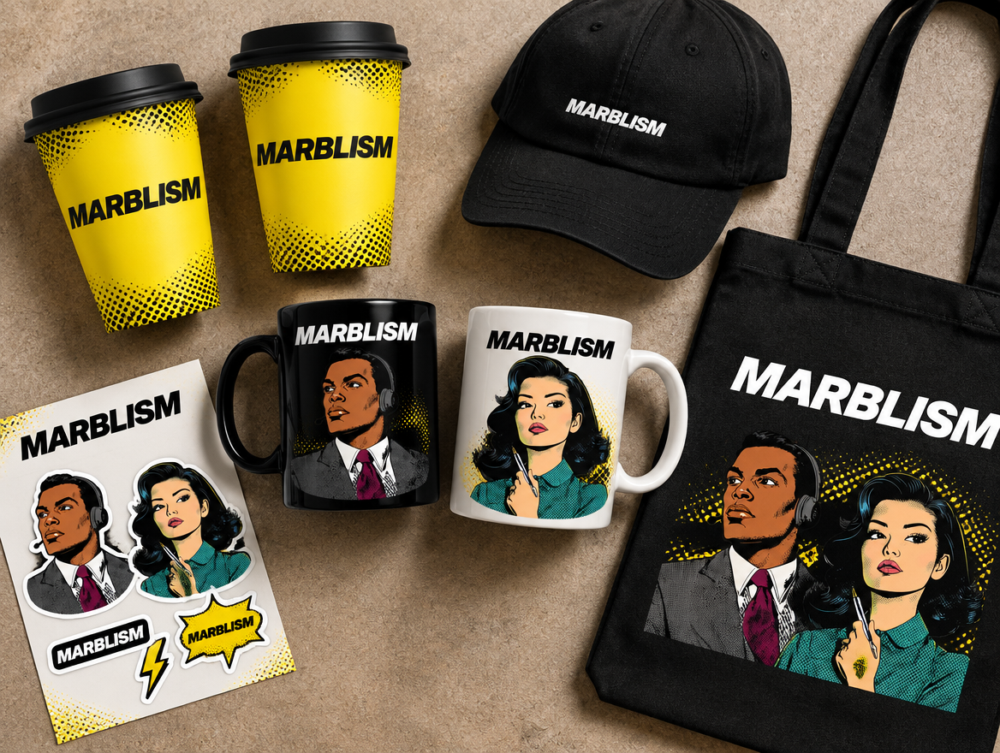
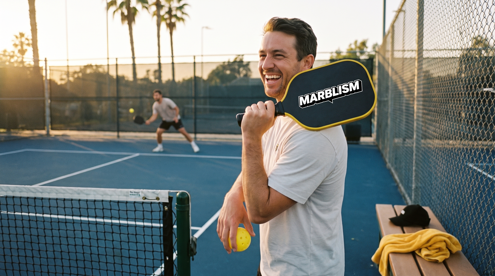

Las activaciones de marca del trimestre: presupuesto, meta de usuarios y plan de contenido de cada una.
$0
Presupuesto total Q4
$0
Comprometido en las activaciones 01 y 02
$0
Viaje opcional: work from San Diego
0
Usuarios para break-even
$0
Disponible para más ideas
Activación 01 · Café
Pop-up: café gratis para emprendedores
Una semana completa regalando café a founders y emprendedores. Cada café es una conversación, una demo y un registro.
Mockup del pop-up: booth negro, vasos amarillos y standees de los personajes.
$0
Costo de la activación
$0
CPA objetivo
0
Usuarios para break-even
7
Días de pop-up
Escenarios
Escenario
Usuarios
CPA real
vs. objetivo ($150)
Bajo
90
$200
+33%, por arriba del objetivo
Break-even
120
$150
En el objetivo
Meta
180
$100
-33%, mejor que el objetivo
Ideal
240
$75
-50%, la mitad del CPA
La regla es simple: $18,000 entre $150 de CPA = 120 usuarios registrados para que la activación pague igual que los canales actuales. A partir del usuario 121, cada registro sale más barato que en paid. La meta operativa es 180: unos 26 registros por día durante los 7 días.
Plan de contenido
Pre (semana -1):teaser en redes con la ubicación y el gancho "café gratis toda la semana para emprendedores", invitación directa a comunidades de founders y geo-ads en la zona.
Durante (día 1 a 7):un reel diario de UGC, micro-entrevistas de 30 segundos con la pregunta "¿qué estás construyendo?", demo de Marblism en pantalla y QR en cada vaso que lleva al registro.
Durante:historias en vivo cada mañana con contador de cafés regalados como mecánica de contenido.
Post (semana +1):video recap, carrusel con los mejores founders entrevistados y secuencia de email de onboarding a todos los registros.
Medición:UTM propio para el QR del evento, código exclusivo del pop-up y conteo de registros por día para el CPA real al cierre.

Los vasos amarillos y la merch de la merch store: mugs, gorra, stickers y tote.
Activación 02 · Pickleball
Gear de pickleball Marblism en San Diego
Palas, gorras y merch Marblism en las canchas de San Diego, donde juega la comunidad tech y founder de la ciudad.

El gear: palas, bolas amarillas, gorra y toalla Marblism en cancha de San Diego.
$0
Presupuesto de la activación
$0
CPA objetivo
0
Usuarios para break-even
0
Meta de usuarios
Concepto
El gear:palas, gorras, toallas y fundas con branding Marblism, regaladas en canchas y clubes con alta concentración de gente de tech.
La mecánica:para llevarte el gear te registras en Marblism en el momento, mismo modelo de QR y UTM que el pop-up de café.
Escalable:puede crecer a un torneo amateur "Marblism Open" con las palas como premio.
Contenido
Reels de partidos con el gear en cancha y founders locales jugando.
Serie "pitch entre puntos": el founder pitchea su startup en lo que dura un rally.
UGC de la comunidad posteando su gear, con hashtag propio de la activación.
Con $32,000 de presupuesto y CPA de $150, el break-even es de 214 usuarios. La meta operativa es 320 registros, que dejaría el CPA en $100. Pendiente de definir: canchas o clubes específicos y fechas.
Activación 03 · Opcional
Work from San Diego
El equipo se instala una semana en San Diego durante las activaciones y todo el contenido se produce en sitio.
$0
Costo del viaje
1
Semana en sitio
0
Personas del equipo
El plan
El equipo:Mateo, Jesús, Fin, Paulina, el crew de filmmaking y posiblemente Ulric.
La idea:trabajar la semana completa desde San Diego mientras corren el pop-up de café y la activación de pickleball.
Por qué vale:las activaciones generan el contenido y el equipo en sitio lo captura en calidad y volumen: reels, BTS, entrevistas y vlogs del equipo.
Opcional pero muy bueno para contenido. Los $7,000 son presupuesto de producción y viaje, no cuentan contra el CPA de adquisición de las activaciones 01 y 02.
Próximamente
More ideas to come ✦
$0
Presupuesto disponible del Q4 para las siguientes activaciones. Ideas en cocina.
Ulric: este es tu espacio. Deja tus ideas aquí abajo y las sumamos al plan.